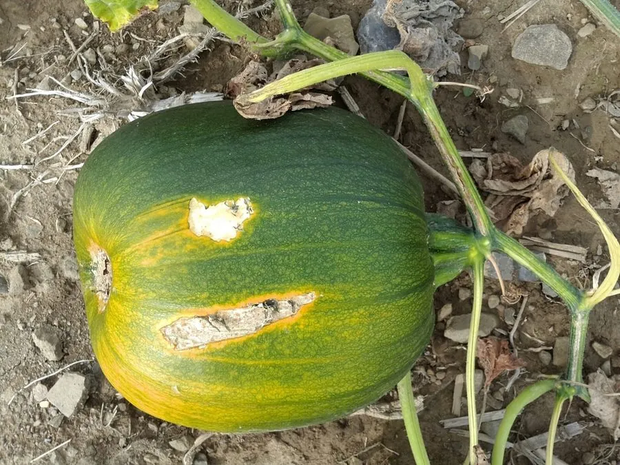

农作物与经济植物 · 植物界
西葫芦 Cucurbita pepo

西葫芦的嫩果皮薄肉嫩，可炒食、做馅和煎饼，生长快、产量高，是常见的瓜类蔬菜，也有观赏用的品种。
- 分类
- 门被子植物门纲双子叶植物纲目葫芦目科葫芦科属南瓜属
- 栖息环境
- 冷凉至温暖的菜地，喜光照充足、疏松肥沃土壤
- 地理分布
- 原产北美洲，现世界各地广泛栽培
- 保护级别
- 暂无评估（栽培作物）
物种志
西葫芦是一年生蔓生或矮生草本，茎有棱和卷须，密生短毛。叶片掌状深裂，表面粗糙。花单性同株，黄色，五瓣。果实为瓠果，长圆柱形或梨形，嫩时皮薄、浅绿色或黄色，果肉白色、柔嫩；成熟后外皮变硬，种子变大。西葫芦与南瓜同属，但多食用嫩果。
西葫芦原产北美洲，是南瓜的近缘种，19 世纪传入欧洲后广泛栽培，如今中国各地均有种植。它喜冷凉至温暖环境，生长快、产量高，适宜在疏松肥沃、排水良好的土壤中种植，多矮生栽培。嫩果皮薄肉嫩，可炒食、做馅、煎饼、做汤，是常见的家常蔬菜；嫩花和嫩梢也可食用。西葫芦富含水分、维生素 C 和膳食纤维，但不宜生食苦味重的果实，以免摄入葫芦素。
形态与习性
- 果实瓠果，长圆柱形或梨形
- 果皮嫩时薄，浅绿或黄色
- 花黄色，雌雄同株
- 用途炒食、做馅、煎饼
- 注意苦味重的果实含葫芦素，不宜食用
趣味知识
- 西葫芦原产美洲，是南瓜的近缘种，主要吃嫩果。
- 西葫芦生长快、产量高，是家常菜里常见的瓜类。
- 苦味重的西葫芦可能含葫芦素，最好不要食用。